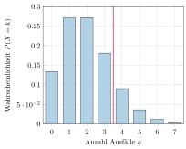
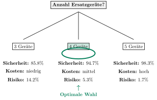

Aufgabe 7.5
Ein Fernsehkundendienst betreut 200 Kunden mit je einem Gerät. Von 100 Geräten fällt pro Tag durchschnittlich ein Gerät aus. Für den Verleih bei Reparaturen hat die Firma drei Geräte auf Vorrat.
- Wie gross ist die Wahrscheinlichkeit, dass an einem Tag kein Gerät verliehen wird?
- Berechnen Sie die Wahrscheinlichkeit, dass an einem Tag mehr Reparaturen ausgeführt werden, als Ersatzgeräte vorhanden sind.
- Wie viele Geräte müssen bereitgehalten werden, damit bei einer Mindestwahrscheinlichkeit von 90% bei jeder Reparatur ein Ersatzgerät zur Verfügung steht?
- Modellieren Sie mit $X \sim B(200, 0.01)$ für die Anzahl täglicher Ausfälle
- Für Teil (b) berechnen Sie $P(X > 3) = 1 - P(X \leq 3)$
- Für Teil (c) suchen Sie das kleinste $k$ mit $P(X \leq k) \geq 0.9$
- Nutzen Sie Tabellen oder Software für die kumulative Binomialverteilung
| Gegeben | Gesucht |
| 200 Kunden mit je einem Gerät | (a) $P(\text{kein Gerät verliehen}) = P(X = 0)$ |
| Tägliche Ausfallwahrscheinlichkeit: | (b) $P(\text{zu wenig Ersatzgeräte}) = P(X > 3)$ |
| $p = \frac{1}{100} = 0.01$ | (c) Minimales $k$ mit $P(X \leq k) \geq 0.9$ |
| Aktuell: 3 Ersatzgeräte auf Lager | |
| $X \sim B(200, 0.01)$ | |
| $\mu = 2$, $\sigma \approx 1.41$ |
Visualisierung der Verteilung:

(a) Wahrscheinlichkeit für keinen Ausfall:
An etwa 13.4% aller Tage wird kein Gerät verliehen.
(b) Wahrscheinlichkeit für mehr als 3 Reparaturen:
\begin{align*} P(X > 3) &= 1 - P(X \leq 3) \\ &= 1 - \sum_{k=0}^{3} \binom{200}{k} \cdot 0.01^k \cdot 0.99^{200-k} \end{align*}
Berechnung der Einzelwahrscheinlichkeiten:
| $k$ | $P(X=k)$ | Kumuliert $P(X \leq k)$ |
| 0 | 0.1340 | 0.1340 |
| 1 | 0.2707 | 0.4047 |
| 2 | 0.2720 | 0.6767 |
| 3 | 0.1814 | 0.8581 |
An etwa 14.2% aller Tage reichen die 3 Ersatzgeräte nicht aus.
(c) Benötigte Anzahl Ersatzgeräte für 90% Sicherheit:
Gesucht: Kleinstes $k$ mit $P(X \leq k) \geq 0.9$
| $k$ | $P(X \leq k)$ | Ausreichend? |
| 0 | 0.1340 | Nein |
| 1 | 0.4047 | Nein |
| 2 | 0.6767 | Nein |
| 3 | 0.8581 | Nein |
| 4 | 0.9483 | Ja ✓ |
| 5 | 0.9832 | Ja ✓ |
Entscheidungsbaum für optimale Lagerhaltung:
